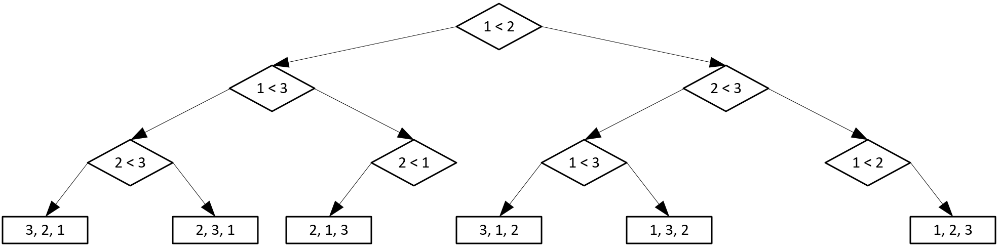
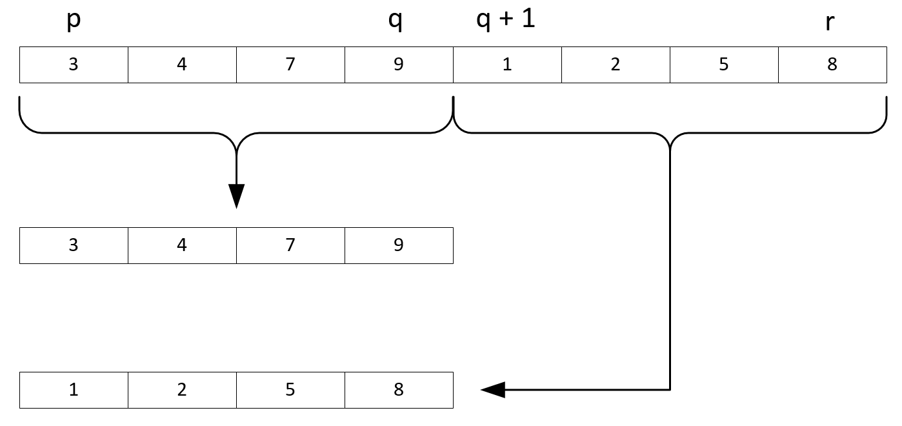
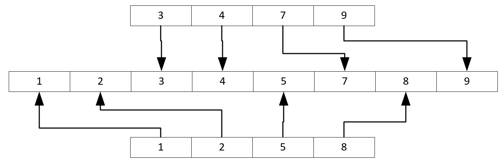
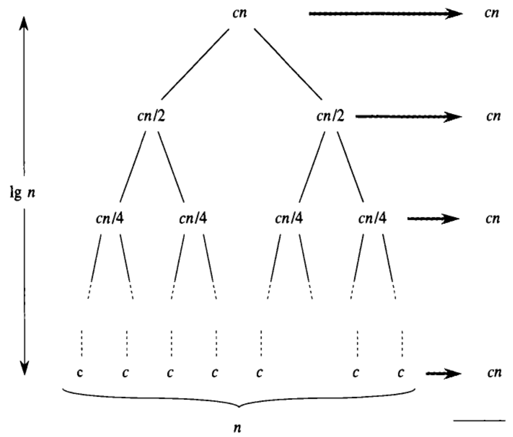

Общее количество выполнений тела внутреннего цикла равно $$\sum_{i = 1}^{N - 1}N - i,$$ что является суммой арифметической прогрессии от $N - 1$ до $1$
Сложность сортировки пузырьком
Сумма $S$ арифметической прогрессии от $a_1$ до $a_N$ рассчитывается как $$S = \frac{a_1 + a_N}{2} \cdot N$$
Для нашего случая: $$\frac{N - 1 + 1}{2} \cdot (N - 1) = \frac{N}{2} \cdot (N - 1)$$
Чтобы понять, эффективна ли пузырьковая сортировка, необходимо определить некоторую границу наилучшей достижимой сложности всех алгоритмов сортировки
Для этого снова воспользуемся деревом решений
Дерево решений
Как и алгоритмы поиска, алгоритмы сортировки для определённого числа элементов могут быть представлены в виде деревьев решений
Каждый узел такого дерева, кроме листьев – сравнение двух элементов с определёнными индексами
Каждый лист такого дерева – ответ в виде одной из перестановок индексов исходной последовательности
Дерево решений пузырьковой сортировки для трёх элементов

Дерево решений
Как видно, максимальная высота узла дерева равна количеству сравнений в худшем случае
Дерево для пузырьковой сортировки построено неэффективно
Как уже было доказано на лекции про поиск, при оптимальном построении дерева его максимальная высота равна $ \lfloor log_2(N) \rfloor$, где $N$ – кол-во листьев
Граница сложности
Чтобы получить теоритическую границу лучшей достижимой сложности сортровки, нужно вычислить максимальную высоту узла в оптимальном дереве
Количетсво листьев в дереве всегда равно количеству всевозможных решений, что равно количеству перестановок из $N$ элементов и равно $$N!$$
Граница сложности
Таким образом, искомая граница равна $log_2(N!)$
Чтобы привести формулу к одной из рассмотренных ранее функций сложности, необходимо воспользоваться формулой Стирлинга: $$N! \approx \sqrt{2\pi N} \left (\frac{N}{e} \right) ^N$$
Таким образом, можно заключить, что сортировка пузырьком не является оптимальным решением задачи сортировки, т.к. её сложность превосходит по порядку роста наилучшую достижимую
Сортировка вставками
Существует ряд более эффективных алгоритмов сортировки
Один из таких алгоритмов – сортировка вставками (insertion sort)
Для $k$ от $2$ до $N$ выполнять:
Среди элементов от $a_1$ до $a_{k - 1}$ найти такой индекс $i$, чтобы $a_{i - 1} < a_k \leqslant a_i$
Вставить $a_k$ перед $a_i$
Сложность сортировки вставками
Т.к. цикл в любом случае выполняется $N - 1$ раз, сложность сортировки вставками определяется сложностью поиска нужного индекса
Простейший (и классический) способ – воспользоваться линейным поиском
В таком случае $N - 1$ операций поиска за $O(N)$ дадут сложность $O(N^2)$
Улучшение сортировки вставками
Рассмотрим алгоритм более подробно
Т.к. на каждой итерации очередной элемент вставляется на своё место, последовательность от $a_1$ до $a_{k - 1}$ всегда отсортирована
Для поиска в отсортированной последовательности существует более эффективный алгоритм – двоичный поиск, однако изначально он предназначен для поиска существующего элемента
Применение двоичного поиска
Если передать алгоритму двоичного поиска элемент, не находящийся в последовательности, он вернёт позицию, на которой можно расположить искомый элемент
Есть единственный нюанс – ситуация, когда искомый элемент больше всех имеющихся. Алгоритм не может вернуть значение, большее, чем изначальная правая граница.
Таким образом, для данной задачи необходимо модифицировать двоичный поиск, задав правую границу на 1 больше
Улучшение сортировки вставками
С использованием двоичного поиска сложность составит $N - 1$ поисков за $O(log_2(N))$, что даёт $$O(Nlog_2(N))$$
Такая сложность совпадает с наилучшей достижимой для алгоритма сортировки, а значит, insertion sort – оптимальный алгоритм сортровки
Проблема сортировки вставками
Сортировка вставками теоретически является оптимальным алгоритмом
Однако на деле её эффективность во многом зависит от того, как хранится последовательность
Как мы увидим на следующих лекциях, для некоторых структур данных сама вставка элемента на произвольную позицию – операция, выполняемая со сложностью $O(N)$
Для таких структур данных сортировка вставками неэффективна
Сортировка слиянием
Рассмотрим другой алгоритм сортировки – сортировку слиянием (merge sort)
Для этого сначала введём вспомогательную процедуру слияния (merge)
Процедура принимает на вход массив, две половины которого отсортированы, и на выходе выдаёт полностью отсортированный массив
Разделение

Объединение

Алгоритм слияния
Разделение массива на два при заданных границах $p$, $q$ и $r$ тривиально
Далее на каждом шаге слияния производится сравнение наименьших ещё не "влитых" в результат элементов двух подмассивов
Алгоритм можно усовершенствовать, введя проверку на то, что все элементы одного подмассива уже "ушли" в результат, в таком случае оставшийся подмассив можно перенести в результат целиком
Сложность слияния
Разделение на подмассивы требует $N$ операций – по одной операции копирования на каждый элемент
Во время слияния производится не более $2N - 1$ сравнений и $N$ копирований в результирующий массив
Таким образом, сложность слияния: $$O(N)$$
Сортировка слиянием
merge_sort(a, p, r):
Если $p < r$, выполнить:
Вычислить $q = \lfloor \frac{p + r}{2} \rfloor$
Выполнить merge_sort(a, p, q)
Выполнить merge_sort(a, q + 1, r)
Слить фрагмент массива $a$ от $q$ до $r$ с серединой в $q$
Анализ сортировки слиянием
Рассмотренный алгоритм отличается от всех, что были рассмотрены ранее
В нём используется рекурсивный вызов процедуры
Таким образом, его сложность можно записать в виде рекуррентного соотношения:
$$
\begin{equation*}
T(N) =
\begin{cases}
c, при\ N = 1\\
2T(\frac{N}{2}) + cN, при\ N > 1
\end{cases}
\end{equation*}
$$
Анализ сортировки слиянием
$c$ в данном выражении означает некоторое константное время
Чтобы получить вычислительноую сложность в $O$-нотации, необходимо решить рекуррентное соотношение
Подробно способы решения будут рассмотрены на следующих лекциях
В данный момент ограничимся лишь одним из них – деревом рекурсии
Дерево рекурсии

Анализ сортировки слиянием
На каждом уровне рекурсии выполняется $cN$ операций и производится ещё два рекурсивных вызова для $\frac{N}{2}$
Таким образом, т.к. высота дерева равна $\lfloor log_2(N) \rfloor$, всего понадобится $cNlog_2(N) + cN$ операций
Тогда результирующая сложность составит $$O(Nlog_2(N))$$
Анализ сортировки слиянием
Данный алгоритм ялвяется оптимальным с точки зрения времени выполнения
Однако для его работы требуется $\Theta(N)$ дополнительной памяти на хранение подмассивов
На следующих лекциях будут рассмотрены алгоритмы сортировки, не требующие дополнительной памяти
Полезные источники
RU Томас Х. Кормен, Чарльз И. Лейзерсон, Рональд Л. Ривест, Клиффорд Штайн. Алгоритмы: построение и анализ, 3-е издание. Разделы 2.3 и 8.1. – Основная книга нашего курса.